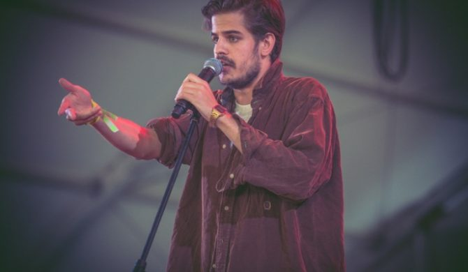

Dzieciństwo i początki kariery
Urodził się 29 lipca 1990 w Kairze . Kiedy miał trzy lata, przeprowadził się z rodzicami z Egiptu do Kantonu w Chinach. Uczęszczał tam najpierw do amerykańskiego, a potem chińskiego przedszkola, gdzie miał problemy komunikacyjne ze względu na barierę kulturową i językową. Po skończeniu przedszkola, w 1996 przeprowadził się z rodziną do Warszawy. Nie miał problemów z nauką, od najmłodszych lat uczył się mówić w dwóch językach jednocześnie. Jak mówił w wywiadzie z Metro Warszawa, z matką i ze swoją o pięć lat starszą siostrą rozmawiał po angielsku, a z ojcem po polsku. Muzyk wspólnie z ojcem słuchał rapu i to od niego zaraził się pasją do tego gatunku, zaś pasje do tekstów zaczerpnął od swojej matki. Filip ukończył Prywatne Gimnazjum nr 1 w Warszawie i XXXIII Liceum Ogólnokształcące Dwujęzyczne im. Mikołaja Kopernika w Warszawie, gdzie poznał swojego przyszłego producenta Macieja „Rumaka” Ruszeckiego oraz projektanta graficznego Łukasza Partykę. W 2004 roku rozwiedli się jego rodzice. Jego matka zaczęła pracę w Brukseli jako specjalistka od HR-u, a ojciec wraz z nową rodziną wyprowadził się do Hiszpanii i zaczął pracę jako kurator sądowy. Raper zaś rozpoczął studiowanie kulturoznawstwa na Uniwersytecie Warszawskim, którego został absolwentem. W 2012 podjął studia magisterskie na Wydziale Antropologii Uniwersytetu Londyńskiego.Podczas studiów w Londynie napisał teksty do swojego mixtape’u pt. Who Killed JFK. Zaczął publikować swoje pierwsze piosenki na kanale fvkilledjfk w serwisie YouTube, używając wówczas pseudonimu Foodvillain. Raper bezskutecznie próbował zająć się także tworzeniem muzyki. Rapował po angielsku na nielegalnie pobranych beatach MF Dooma w piwnicy swojego kolegi. W tekstach nawiązywał do twórczości raperów takich jak np. Childish Gambino czy Jay-Z. Sam projekt nie spotkał się z większym rozgłosem. 26 grudnia 2013 za pośrednictwem serwisu Bandcamp udostępnił swój anglojęzyczny minialbum pt. Young Hems. Artysta przyjął pseudonim Taco Hemingway, który zaczerpnął z gry piłkarskiej FIFA, w której grał pod takim pseudonimem. Materiał nagrywany był w Brukseli w piwnicy w ówczesnym domu jego mamy. Płyta ponownie nie uzyskała większego rozgłosu. Raper początkowo zatrudnił się w branży reklamowej, lecz porzucił ją na rzecz zostania tłumaczem języka angielskiego, a w międzyczasie pisał swój drugi minialbum. 19 grudnia 2014 ukazał się jego drugi, ponownie wydany nakładem własnym minialbum, zatytułowany Trójkąt warszawski. Płyta została udostępniona bezpłatnie w formie digital stream na kanale YouTube oraz bezpłatnie do pobrania na oficjalnej stronie rapera. Dzień po premierze płyty artysta zagrał swój pierwszy koncert w Cafe Kulturalna w Warszawie. Radiowa premiera kawałków z Trójkąta miała miejsce w grudniowej sobotniej audycji Tony z betonu w radiowej Trójce, dla której artysta udzielił również wywiadu. W styczniu opublikował na swoim kanale utwór „Tunarzywo” który został nagrany w 2013 roku. 27 marca 2015 zagrał koncert w Klubokawiarni Chłodna 25, który był „oficjalną” premierą płyty. W kwietniu 2015 udzielił wywiadu dla Polskiego Radia Koszalin w audycji Rapnejszyn. Tego samego roku miał wystąpić w akcji promocyjnej portalu PopKiller pt. Młode Wilki 2015, jednakże odmówił z braku czasu. 6 czerwca 2015 miejsce miała premiera cyfrowa pierwszego singla pt. „6 zer” wraz z teledyskiem, w reżyserii Łukasza Partyki oraz Jonasza Tołopiły. Singiel okazał się pierwszym większym sukcesem komercyjnym rapera i kluczem do popularności w Polsce. 27 czerwca 2015 ukazał się trzeci minialbum muzyka, zatytułowany Umowa o dzieło. Materiał został udostępniony bezpłatnie w cyfrowych formach: na kanale YouTube oraz za pośrednictwem oficjalnej strony rapera.Taco początkowo wysyłał swoje płyty do wytwórni Prosto oraz Alkopoligamii, jednak z braku odpowiedzi wysłał nagrania do Marcina „Tytusa” Grabskiego – właściciela oficyny Asfalt Records. Tam płyty spotkały się z zainteresowaniem wydawcy co ostatecznie zaowocowało podpisaniem kontraktu wydawniczego.19 sierpnia 2015 do sprzedaży trafiły reedycje płyt Trójkąt warszawski i Umowa o dzieło, które zyskały ogromny rozgłos, docierając odpowiednio do 3. i 2. miejsca polskiej listy przebojów – OLiS, obie sprzedając się w ilości ponad 10 tys. kopii w dniu premiery. Albumy zostały świetnie przyjęte przez słuchaczy oraz zdobyły same pozytywne opinie krytyków[38][43]. Album Umowa o dzieło osiągnął do 2017 status złotej płyty. Z kolei pochodząca z albumu Umowa o dzieło piosenka „Następna stacja” zajęła 1. miejsce Listy Przebojów Programu Trzeciego Polskiego Radia i utrzymywała się na nim przez kilka tygodni. Tego samego roku wyruszył w pierwszą trasę koncertową po Polsce, pod nazwą Następna Stacja Tour[46]. W tym samym roku po raz pierwszy wystąpił na Open’er Festival, na pobocznej scenie. W 2016 został laureatem najważniejszej polskiej nagrody muzycznej – Fryderyka, za album Umowa o dzieło w kategorii Album roku Hip-Hop. Raper nie zjawił się na gali odebrania nagród i jak zdradził w utworze „Żywot” w momencie przyznawania nagrody grał w grę komputerową Wiedźmin 3: Dziki Gon. 5 lipca 2016 wydał singiel „Deszcz na betonie”, który zapowiadał album Marmur. Singiel okazał się hitem w wielu rozgłośniach radiowych, osiągając sukcesy na listach przebojów, m.in. docierając do 1. miejsca radia UWM FM oraz radia RDC. Trafił również na listy przebojów w Polskim Radiu III, Radiu Poznań oraz Radiu Szczecin.